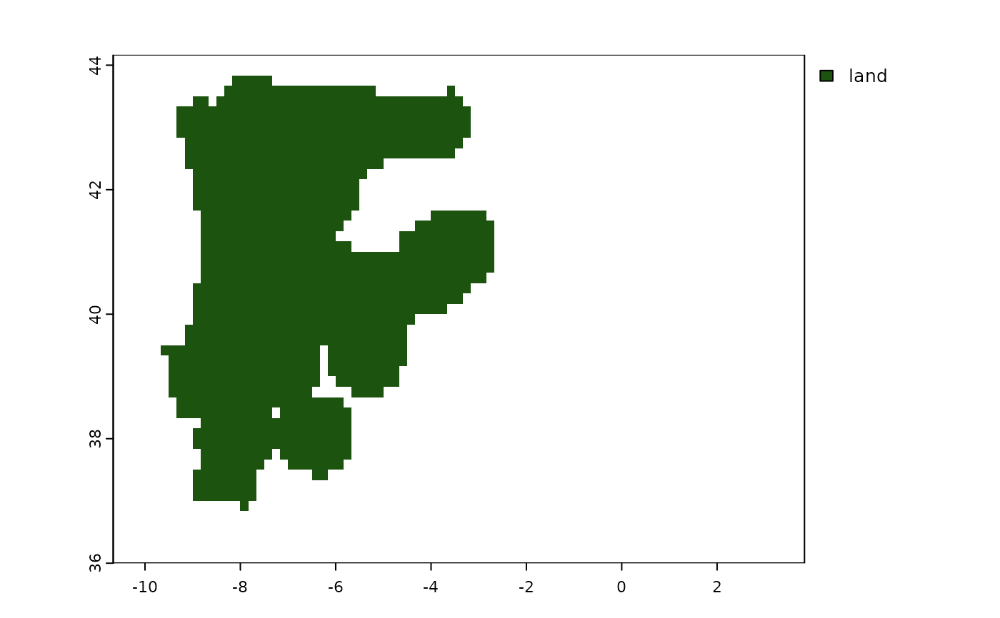

This functions uses the presence column to create a mask to apply to the raster to define the area of interest. Two methods are available: one that uses a buffer around each presence, and one that create a convex hull around all presences (with the possibility of further adding a buffer around the hull).
Arguments
- data
An
sf::sfdata frame of presences..- method
the method to use to create the mask. Either 'buffer' or 'convex_hull'
- buffer
the buffer to add around each presence (in the units of the crs of the data; for lat/lon, the buffer will be in meters), or around the convex hull (if method is 'convex_hull')
- return_sf
whether to return the mask as an
sfobject (if TRUE) or as aterra::SpatVectorobject (if FALSE, default)
Value
a terra::SpatVector or an sf object (depending on the value of
return_sf) with the mask
Details
To use terra::mask() on a raster, use return_sf = FALSE to get a
terra::SpatVector object that can be used for masking.
Examples
lacerta_sf <- lacerta %>%
sf::st_as_sf(coords = c("longitude", "latitude")) %>%
sf::st_set_crs(4326)
land_mask <- terra::readRDS(system.file("extdata/lacerta_land_mask.rds",
package = "tidysdm"
))
mask_buffer <- make_mask_from_presence(lacerta_sf,
method = "buffer",
buffer = 60000
)
terra::plot(terra::mask(land_mask, mask_buffer))

mask_ch <- make_mask_from_presence(lacerta_sf, method = "convex_hull")
terra::plot(terra::mask(land_mask, mask_ch))